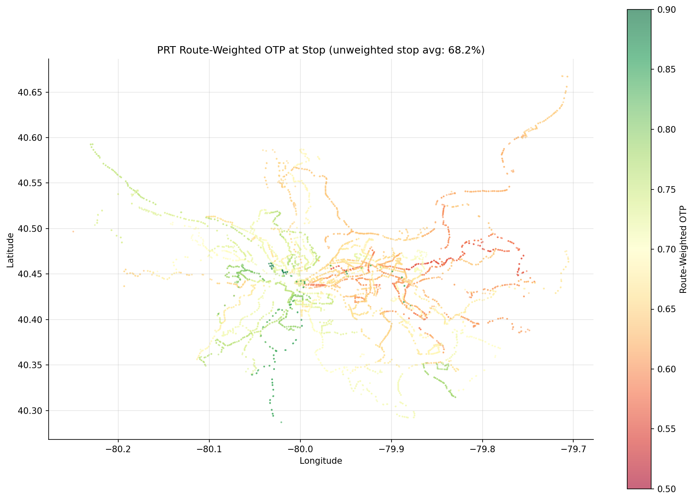

Analysis
08: Hot-Spot Map
Core OTP Patterns
Coverage: 2019-01 to 2025-11 (from otp_monthly).
Built 2026-03-20 19:26 UTC · Commit 174c909
Page Navigation
Analysis Navigation
Data Provenance
flowchart LR
08_hotspot_map(["08: Hot-Spot Map"])
t_otp_monthly[("otp_monthly")] --> 08_hotspot_map
01_data_ingestion[["Data Ingestion"]] --> t_otp_monthly
t_route_stops[("route_stops")] --> 08_hotspot_map
01_data_ingestion[["Data Ingestion"]] --> t_route_stops
t_routes[("routes")] --> 08_hotspot_map
01_data_ingestion[["Data Ingestion"]] --> t_routes
t_stops[("stops")] --> 08_hotspot_map
01_data_ingestion[["Data Ingestion"]] --> t_stops
d1_08_hotspot_map(("branca (lib)")) --> 08_hotspot_map
d2_08_hotspot_map(("folium (lib)")) --> 08_hotspot_map
d3_08_hotspot_map(("matplotlib (lib)")) --> 08_hotspot_map
d4_08_hotspot_map(("polars (lib)")) --> 08_hotspot_map
classDef page fill:#dbeafe,stroke:#1d4ed8,color:#1e3a8a,stroke-width:2px;
classDef table fill:#ecfeff,stroke:#0e7490,color:#164e63;
classDef dep fill:#fff7ed,stroke:#c2410c,color:#7c2d12,stroke-dasharray: 4 2;
classDef file fill:#eef2ff,stroke:#6366f1,color:#3730a3;
classDef api fill:#f0fdf4,stroke:#16a34a,color:#14532d;
classDef pipeline fill:#f5f3ff,stroke:#7c3aed,color:#4c1d95;
class 08_hotspot_map page;
class t_otp_monthly,t_route_stops,t_routes,t_stops table;
class d1_08_hotspot_map,d2_08_hotspot_map,d3_08_hotspot_map,d4_08_hotspot_map dep;
class 01_data_ingestion pipeline;
Findings
Findings: Hot-Spot Map
Important: Derived Metric
Stop-level OTP is a derived metric: each stop inherits the average OTP of the routes serving it, weighted by trip frequency (trips_7d). It reflects route composition at each stop, not independently measured stop-level performance. A stop served by a single high-OTP route will appear "high-performing" even if that stop is a chronic delay point on that route. Conversely, a stop served by many routes will reflect the blended average of those routes.
Summary
6,212 stops were mapped with route-weighted OTP (after excluding 2 stops with null/NaN OTP due to zero total trips, and excluding routes with fewer than 12 months of data). Poor performance clusters in eastern Pittsburgh (Penn Hills, Squirrel Hill, Highland Park), while the best performance follows the light rail and busway corridors.
Geographic Patterns
- Best corridors: The light rail T line (Beechview/Overbrook south to Library) and the East Busway (Wilkinsburg to downtown) form clear green bands on the map, with 80%+ OTP at most stops.
- Worst corridors: Eastern neighborhoods served by Route 77 (Penn Hills) show the lowest stop-level OTP at 55.8%. The 61-series routes through McKeesport and Homestead also form a low-OTP cluster.
- Downtown: Mixed performance. Stops in the Golden Triangle are served by many routes, so their weighted OTP reflects the system average (~65--70%).
Mode Context
The best-performing stops (88.4%) are all served exclusively by BUS routes -- specifically Route 18 (Manchester). The high-OTP corridor along the T line reflects rail's structural advantage (dedicated right-of-way), not independently measured stop performance. When interpreting the map:
- Rail stops (light rail T line) appear green primarily because RAIL routes average ~84% OTP system-wide. These stops' high performance reflects mode advantage, not stop-specific factors.
- Busway stops (East Busway, West Busway) also appear green for similar reasons -- dedicated right-of-way.
- Genuinely high-performing bus stops include those on Route 18 (Manchester, 88.4%) and Route 39 (Brookline), which achieve high OTP on mixed-traffic streets.
Observations
- The worst-performing stops (55.8%) are exclusively served by Route 77, the system's lowest-ranked route.
- The best-performing stops (88.4%) are exclusively served by Route 18 (Manchester) -- a bus route, not rail.
- Stops served by multiple routes tend toward the system mean, since the weighting blends good and bad routes.
- The system average displayed in the chart title (unweighted stop-level average) treats every stop equally regardless of trip volume. A trip-weighted system average would differ slightly.
Caveats
- The map uses a simple lat/lon scatter, not a true geographic projection. At Pittsburgh's latitude, this introduces minor distortion but the overall shape is recognizable.
- Stops with null or NaN OTP values (2 stops) were excluded from the map.
- OTP is averaged across all months (2019--2025), so the map doesn't show temporal changes.
- Routes with fewer than 12 months of OTP data were excluded to avoid projecting noisy estimates onto the map.
Review History
- 2026-02-11: RED-TEAM-REPORTS/2026-02-11-analyses-01-05-07-11.md -- 7 issues (1 significant). Documented derived-metric nature of stop OTP, added mode column and bus/rail context, added minimum 12-month filter for route OTP, clarified unweighted system average, corrected NaN claim, fixed hood="0" sentinel, added dropped-stop logging.
Output

geographic scatter plot.
interactive folium map over OpenStreetMap tiles with per-stop popups.
per-stop route-weighted OTP with coordinates.
Preview CSV
Methods
Methods: Hot-Spot Map
Question
Where do poor-performing routes cluster geographically? Are there corridor-level bottlenecks visible on a map?
Approach
- For each stop, compute the trip-weighted average OTP of all routes serving it. This is a derived metric ("route-weighted OTP"): each stop inherits the average OTP of the routes serving it, weighted by trip frequency (
trips_7d). It reflects route composition at each stop, not independently measured stop-level performance. - Only include routes with at least 12 months of OTP data to avoid projecting noisy estimates onto the map.
- Plot stops on a lat/lon scatter plot, colored by route-weighted OTP performance.
- Use a diverging red-yellow-green colormap so low OTP areas are immediately visible.
- Display the unweighted stop-level average as a reference (note: this is unweighted across stops, not weighted by trip volume).
- Track the mode (BUS/RAIL) of routes serving each stop for context.
- Stops with null or NaN OTP (due to zero total trips or missing data) are excluded from the map.
Data
| Name | Description | Source |
|---|---|---|
otp_monthly |
Monthly OTP per route (averaged across all months, routes with < 12 months excluded) | prt.db table |
route_stops |
Which stops are served by which routes, with trip counts | prt.db table |
routes |
Route metadata including mode | prt.db table |
stops |
Lat/lon coordinates | prt.db table |
shapes.txt |
Route polyline geometries | GTFS file (data/GTFS/) |
trips.txt |
Route-to-shape mapping | GTFS file (data/GTFS/) |
Output
output/hotspot_map.csv-- per-stop route-weighted OTP with coordinatesoutput/hotspot_map.png-- geographic scatter plotoutput/hotspot_map.html-- interactive folium map over OpenStreetMap tiles with per-stop popups
Sources
| Name | Type | Why It Matters | Owner | Freshness | Caveat |
|---|---|---|---|---|---|
| otp_monthly | table | Primary analytical table used in this page's computations. | Produced by Data Ingestion. | Updated when the producing pipeline step is rerun. | Coverage depends on upstream source availability and ETL assumptions. |
| route_stops | table | Primary analytical table used in this page's computations. | Produced by Data Ingestion. | Updated when the producing pipeline step is rerun. | Coverage depends on upstream source availability and ETL assumptions. |
| routes | table | Primary analytical table used in this page's computations. | Produced by Data Ingestion. | Updated when the producing pipeline step is rerun. | Coverage depends on upstream source availability and ETL assumptions. |
| stops | table | Primary analytical table used in this page's computations. | Produced by Data Ingestion. | Updated when the producing pipeline step is rerun. | Coverage depends on upstream source availability and ETL assumptions. |
| branca | dependency | Runtime dependency required for this page's pipeline or analysis code. | Open-source Python ecosystem maintainers. | Version pinned by project environment until dependency updates are applied. | Library updates may change behavior or defaults. |
| folium | dependency | Runtime dependency required for this page's pipeline or analysis code. | Open-source Python ecosystem maintainers. | Version pinned by project environment until dependency updates are applied. | Library updates may change behavior or defaults. |
| matplotlib | dependency | Runtime dependency required for this page's pipeline or analysis code. | Open-source Python ecosystem maintainers. | Version pinned by project environment until dependency updates are applied. | Library updates may change behavior or defaults. |
| polars | dependency | Runtime dependency required for this page's pipeline or analysis code. | Open-source Python ecosystem maintainers. | Version pinned by project environment until dependency updates are applied. | Library updates may change behavior or defaults. |